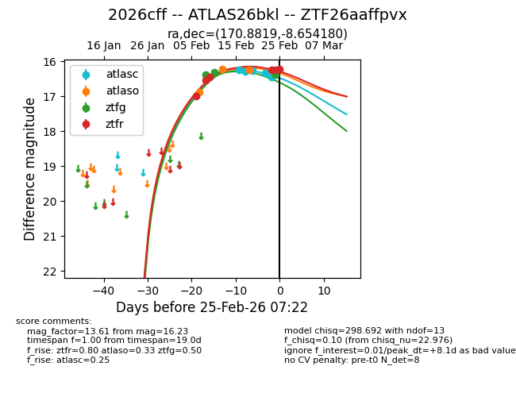
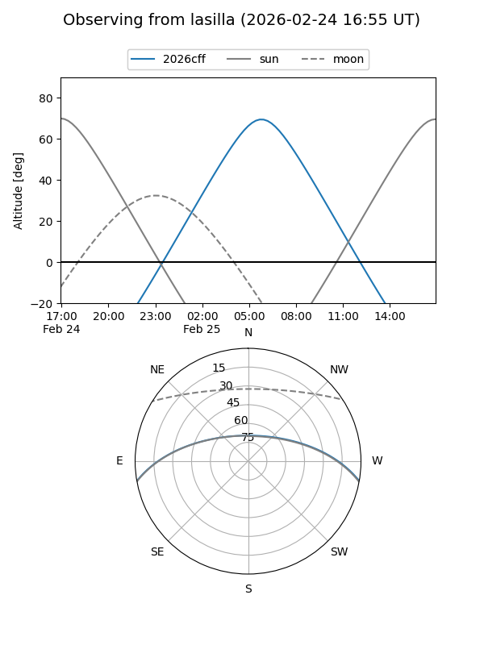
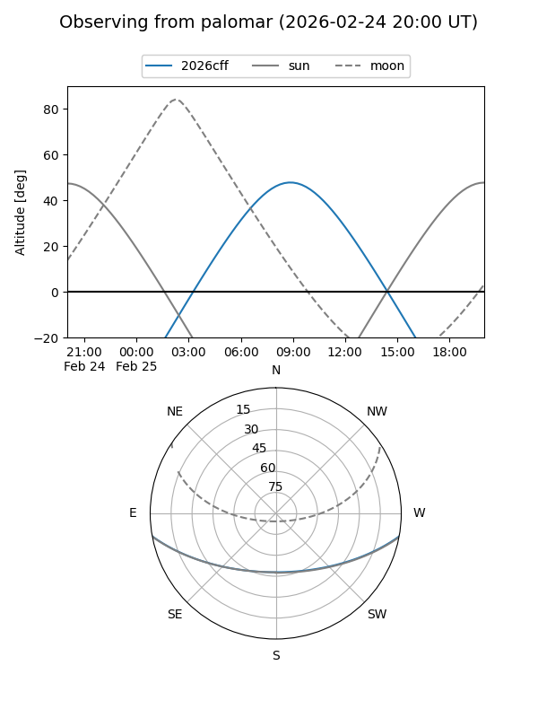
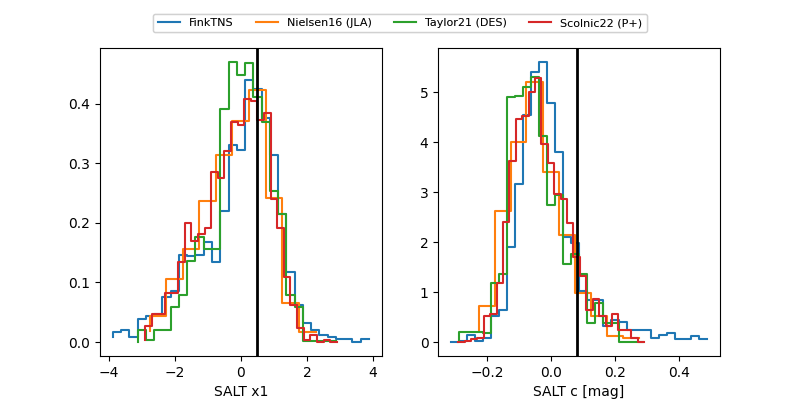

2026cff
Target 2026cff at 2026-02-25 07:23
Aliases and brokers:
FINK: link
Lasair: link
ALeRCE: link
TNS: link
YSE: link
alt names
ZTF26aaffpvx (ztf,fink_ztf)
2026cff (tns,yse)
ATLAS26bkl (atlas)
Coordinates:
equatorial (ra, dec) = 170.8819,-8.65418
equatorial (HMS+DMS) = 11:23:31.65,-08:39:15.05
galactic (l, b) = (269.0972,+48.35739)
Flags:
Photometry:
last atlasc=16.44, atlaso=16.26, ztfg=16.39, ztfr=16.23
5 atlasc, 4 atlaso, 3 ztfg, 6 ztfr detections
Lightcurve

Visibility


Additional plots
